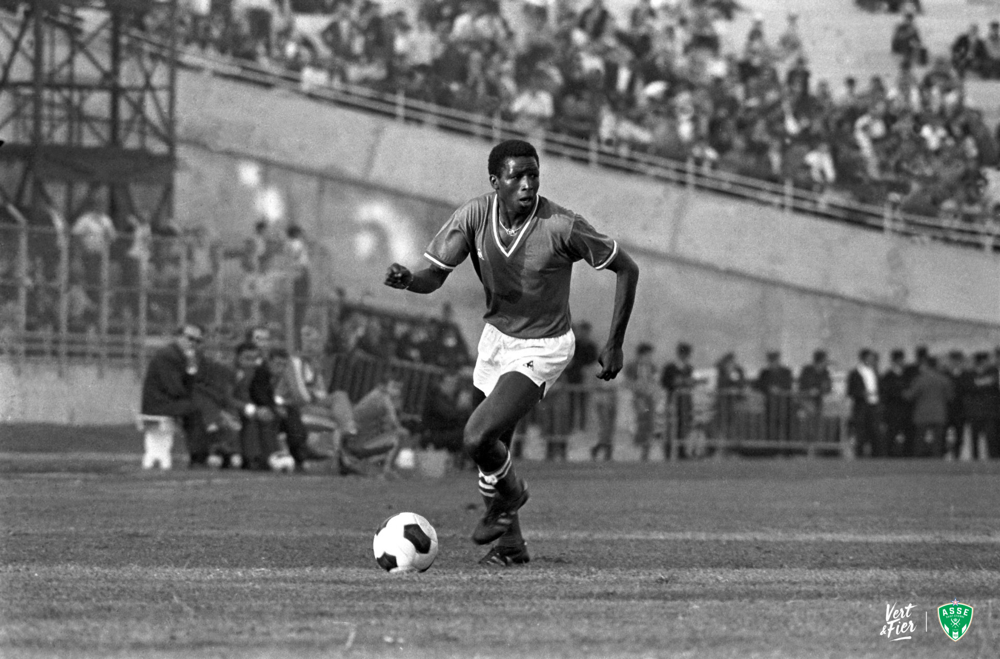
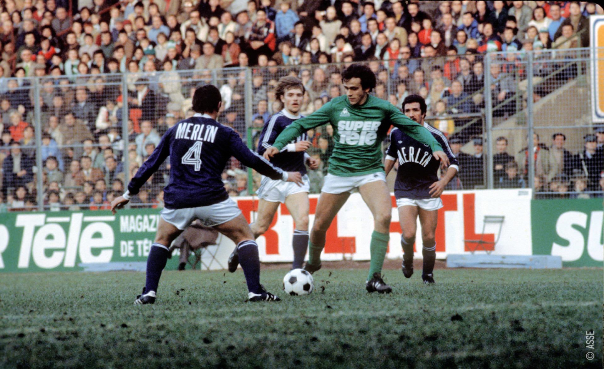
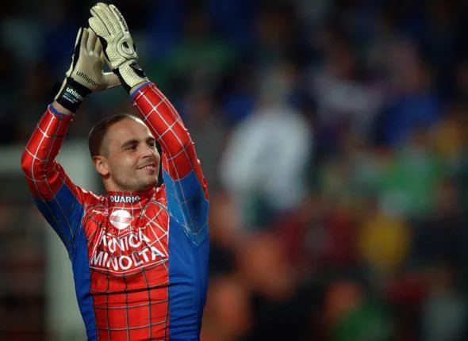
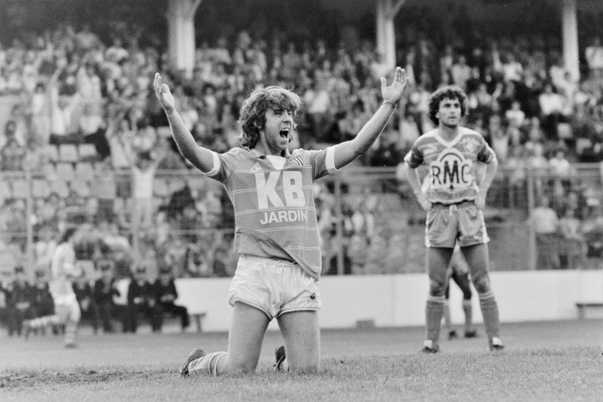
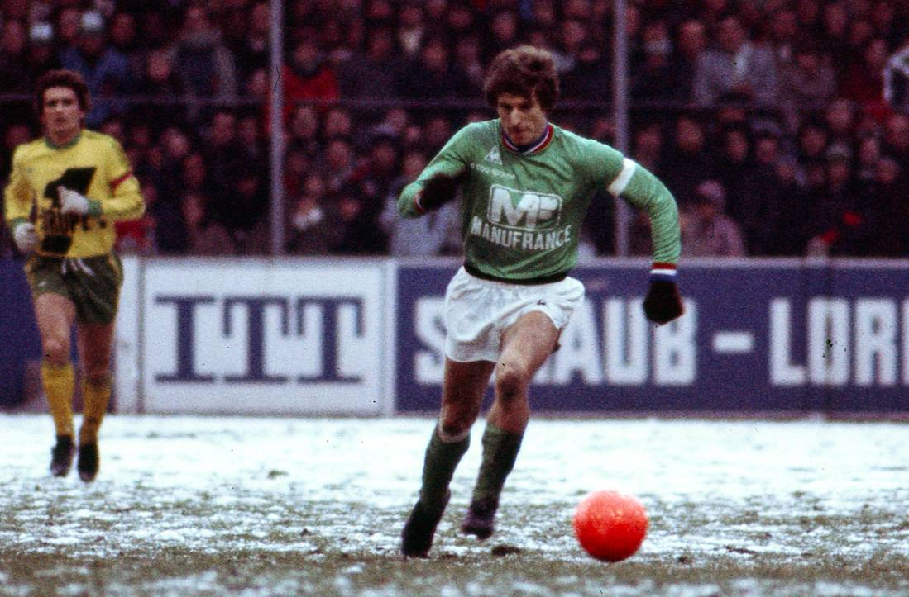
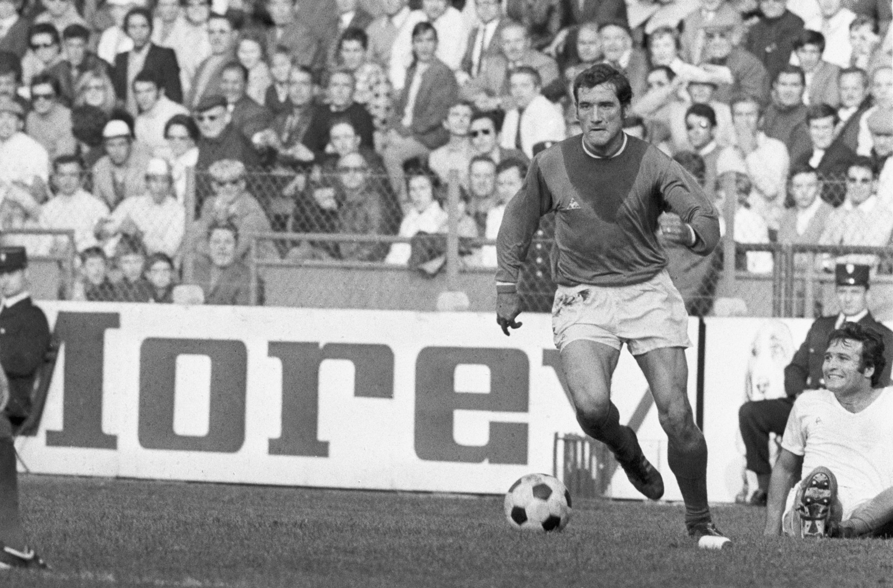
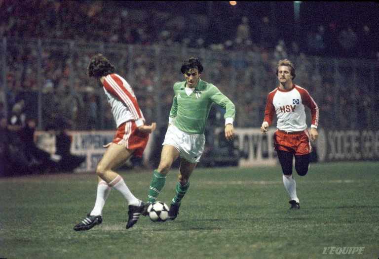

Robert Herbin
Joueur de 1957 à 1972 puis entraîneur emblématique, Robert Herbin, surnommé “Le Sphinx”, est une figure majeure du club. Il a mené l’ASSE - Site officiel à son âge d’or avec de nombreux titres nationaux et l’épopée européenne de 1976.

Salif Keita
À l’ASSE - Site officiel de 1967 à 1972, Salif Keita fut l’un des plus grands attaquants de l’histoire du club. Premier Ballon d’Or africain, il a marqué les supporters par sa vitesse, sa technique et ses buts spectaculaires.

Romain Hamouma
Joueur de 2012 à 2022, Romain Hamouma est l’un des visages marquants de la décennie 2010. Décisif dans les moments importants, il a notamment offert à l’ASSE - Site officiel la victoire en finale de Coupe de la Ligue 2013.
Michel Platini
À Saint-Étienne de 1979 à 1982, Michel Platini a marqué le club par son talent exceptionnel. Maître du jeu, il a illuminé Geoffroy-Guichard par ses passes, ses coups francs et son intelligence tactique.

Loïc Perrin
Défenseur emblématique formé au club, Loïc Perrin a porté le maillot vert de 2003 à 2020. Fidèle parmi les fidèles, il est l’un des derniers grands symboles de l’amour du maillot.

Jérémy Janot
Gardien de 1996 à 2012, Jérémy Janot est devenu une idole grâce à son courage, ses réflexes et son attachement profond au club. Connu pour ses arrêts spectaculaires et sa passion, il reste un chouchou du public.

Laurent Paganelli
Arrivé très jeune, Paganelli a porté les couleurs stéphanoises de 1978 à 1983. Talent précoce, il est encore à ce jour le plus jeune joueur à avoir débuté en première division française.

Jean-Michel Larqué
Joueur de 1966 à 1977, Larqué est l’un des plus grands milieux de l’histoire de l’ASSE - Site officiel. Leader technique de l’équipe, il a été un acteur essentiel de l’épopée des Verts dans les années 70.

Hervé Revelli
Attaquant emblématique de l’AS Saint-Étienne, Hervé Revelli a porté le maillot vert de 1966 à 1971 puis de 1973 à 1978. Meilleur buteur de l’histoire du club, il est l’un des grands artisans de l’âge d’or stéphanois avec ses nombreux buts décisifs. Revelli a marqué les supporters par son sens du but exceptionnel, son efficacité en attaque et son rôle majeur dans les titres remportés durant les années 70.

Patrick Battiston
Défenseur emblématique de l’AS Saint-Étienne, Patrick Battiston a porté le maillot vert de 1980 à 1983. Solide et élégant dans son jeu, il s’est imposé comme un pilier de la défense stéphanoise grâce à son intelligence tactique et sa relance propre. Battiston a marqué les supporters par sa régularité, son sang-froid et son expérience du haut niveau, contribuant à maintenir la compétitivité du club au début des années 80.
